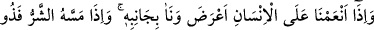
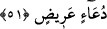
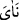
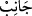
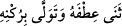
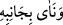

sûret ve şekillere dönüşmekte melekler gibi olmuşlardır.
Kanadını aç tûba ağacında öt,
Senin gibi bir kuşun kafeste esir olması ne yazık.
51. İnsana bir nimet verdiğimiz zaman (bizden) yüz çevirir ve yan çizer. Fakat
ona bir şer dokunduğu zaman da yalvarıp durur.
“İnsana bir nimet verdik mi” şükürden “yüz çevirir; yan çizer,” tamamen şükürden
uzaklaşır. “Ona,” şükürden yüz çeviren mütekebbir insana belâ, mihnet gibi “bir şer
dokundu mu” artık “yalvarıp durur.”
İnsana bir nimet verdik mi Allah’ın bu ihsânına karşı teşekkürden yüz çevirir. İşte bu
durum Allah’ın kendisine lutfettiği nimetten dolayı şımaran kâfirin başka bir çeşit
azgınlığıdır. Sanki bu insan şimdiye kadar hiçbir sıkıntıya dûçâr olmamış gibi mun’im-i
hakîkî gerçek nimet sahibini unutmuş, şükür ve teşekkür etmemekle nankörlük etmiştir
Tâcu’l-masâdir’de anlatıldığı üzere bu “
/neâ’” kelimesi harf-i cersiz yahut “an”
harfi cerri ile müteaddî olur. Bu yan çizen nankör insan, kibir ve gurûrundan ötürü
sadece yan çizmekle kalmayıp tamamen şükürden uzaklaşır, şükür ve tâate meyletmez.
Burada “cânib” kelimesi mecaz olup bundan şahsın kendisi murâd edilmiştir. “Allah’ın
yanında (ona kullukta) kusur edişimden dolayı vah! (bana)” (ez-Zümer, 39/56)
âyetindeki “cenb” kelimesi de mecâz olup bununla “Allah’ın zâtı” murâd edilmiştir.
Yine buradaki “
/cânib” kelimesinden maksad, bu nankör ve mütekebbir kişinin
boynunu öteye döndürerek kabarıp şımarması da olabilir. Bu durumda ifâde mecâz
olmayıp hakîkati üzere gelmiş olur; “boynunu döndürmek ve haktan meyletmek” demek
olur. Çünkü “şükürden yan çizmek”, şükürden sapmak ve boynunu döndürmek mânâsına
gelmektedir. Bu mânâda; “
”, “boynunu döndürdü ve zâtıyla yüz çevirdi”
denmiştir. Bu yoruma göre “
” ifâdesindeki “bâ” harf-i cerri müteaddîlik için
olur.
et-Te’vîlâtü’n-Necmiyye’de şöyle denmiştir: Biz insanı zulüm ve cehâletten ibâret
olan tabîatıyla baş başa bıraktığımızda insan, lutuf ile belâyı temyîz ve tefrîk edemez.
Birçok hîle, istidrâç ve musîbeti lutuf ve ihsân sanarak bunların devamını ister. Yine
belâ ve musîbet sûretinde nice lutuf ve ihsânları şer ve kötü sanıp bu durumdan hiç
hoşlanmaz. Hatta böyle nankör ve mütekebbir insana lutuf ve ihsânda bulunduğumuzda
buna şımararak mukâbele eder.
Bir musîbet ile imtihan ettiğimizde ise canı sıkılıp hiç hoşlanmaz. Onu bu durumdan